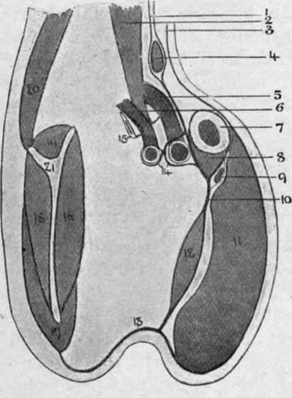

The Axilla
Description
This section is from the book "Surgical Anatomy", by John A. C. MacEwen. Also available from Amazon: Surgical Anatomy.
The Axilla
The Axilla (Fig. 50) is a roughly funnel-shaped passage between the neck and the arm, whose apex is directed upwards and inwards, which is bounded in front by the clavicle and sub-clavius muscle, and behind by the first rib and first digitation of the serratus magnus, and whose base corresponds to the hollow of the armpit. The skin over the region presents numerous hairs and sebaceous and sudoriferous glands, in connection with which small abscesses frequently arise. Its anterior wall is composed of the pectoral muscles, the pectoralis major enveloped in the thin, deep pectoral fascia, and its lower border extending between the fifth rib and the middle of the anterior border of the deltoid. Between the upper border of the pectoralis major and the deltoid is a narrow groove, which 'contains the cephalic vein, humeral branch of the acromio-thoracic artery, and one or two infraclavicular glands. The pectoralis minor forms with the costo-coracoid membrane a second, deeper layer.
The costo-coracoid membrane extends from the clavicle and subclavius muscle above, between the chest-wall internally and coracoid process externally, to the axillary fascia, stretching between the anterior and posterior axillary folds, below, where it fuses with subcutaneous tissues. On its way it splits to enclose the pectoralis minor, and it acts as a suspensory ligament, drawing up the skin of the axilla. It is separated by loose cellular tissue from the fascia covering the pectoralis major, and in this tissue lie branches of the acromio-thoracic vessels, anterior thoracic nerves, and a lymphatic gland belonging to the infraclavicular group. The portion above the pectoralis minor is perforated by the cephalic vein, branches of the acromio-thoracic vessels, and external anterior thoracic nerve. From its deep surface it sends off an expansion to the axillary vessels.
Fig. 48.-Costo-coracoid Membrane.
1. | Pretracheal layer, deep | 7. | Clavicle. | 14. | Axillary sheath. |
cervical fascia | 8. | Subclavius. | 15. | First rib. | |
2. | Scalenus amicus. | 9. | Cephalic vein. | 16. | Subscapulars. |
3. | Investing layer, deep cervical fascia. | 10. | Costo-coracoid membrane (clavi-pectoral fascia). | 17. | Teres major. |
18. | Infraspinatus. | ||||
4. | Omo hyoid. | 11. | Pectoralis major. | 19. | Supraspinatus. |
5. | Axillary vein. | 12. | Pectoralis minor. | 20. | Trapezius. |
r, | Axillary artery. | 13. | Axillary fascia. | 21. | Scapula. |
The posterior wall is formed from above downwards by the subscapularis, latissimus dorsi, and teres major muscles, and the inner costal all is bounded by the five upper ribs, intercostal spaces, and serratus magnus, on whose surface lies the posterior thoracic nerve. The base of the passage or hollow of the armpit is covered by skin, subcutaneous tissues, and axillary fascia, the latter rather ill-defined, and fusing in front with the pectoral fascia ; behind with that covering the latissimus dorsi and teres major ; internally with the fascia of the serratus, and externally with the deep fascia of the arm. The axilla is occupied by loose fatty connective tissue, in which large collections of pus or blood may accumulate, and lodges the axillary vessels, brachial plexus, and lymphatic glands.
The axillary artery extends from the outer border of the first rib to the lower border of the teres major muscle, and is divided into three parts-above, behind, and below the pectoralis minor. Its course, and that of the brachial, is represented by a line drawn from a point ½ inch inside the centre of the clavicle, to the centre of the bend of the elbow with the upper limb at right angles to the trunk. It is accompanied by the axillary vein, lymphatic glands, and cords of the brachial plexus, the vessels being enclosed in the axillary sheath derived from the deep cervical fascia. The first part lies on the first intercostal space and serratus magnus muscle, beneath the clavicular portion of the pectoralis major and the costo-coracoid membrane, and is crossed by the cephalic vein from without inwards. The axillary vein lies on its inner anterior aspect, and the cords of the brachial plexus behind and to the outer side. One branch, the superior thoracic, is given off, which anastomoses with the suprascapular, acromio-thoracic, and internal mammary arteries.
Ligature of the first part is performed through a slightly curved incision, made below the clavicle from inside the coracoid to the sterno-clavicular articulation, skin, subcutaneous tissue, platysma, and pectoralis major being divided.
(This portion of the pectoralis major sometimes consists of two planes, with an intervening cellular interval.) The pectoralis minor is now pulled down, the costo-coracoid membrane defined and divided close to the coracoid process ; the vein is drawn in, the sheath of the vessel opened, and the needle passed from within outwards. If the vein overlaps the artery, the arm should be drawn down to the side. In dividing the costo-coracoid membrane, care must be taken not to cut the branches of the acromio-thoracic artery and external and internal anterior thoracic nerves. Anastomosis is as in the third part.
The second part is the shortest, and is surrounded by the cords of the brachial plexus lying in the positions indicated by their names-inner, outer, and posterior. The acromio-thoracic and long thoracic branches are given off near the upper and lower borders of the pectoralis minor respectively. The latter is also called the external mammary, and supplies the outer and deeper parts of the gland and the pectoralis muscles. Its vem is stated to be a canalized vein, one whose walls are rigid and do not collapse when cut, rendering it liable to suck in air on inspiration.
The third part lies partly under the pectoralis major and partly superficially, and lies on the latissimus dorsi and teres major, while the capsule of the shoulder-joint and coraco-brachialis lie externally. It is surrounded by branches of the brachial plexus, the inner head of the median lying in front, the internal cutaneous and ulnar to the inner side, median and musculo-cutaneous to the outer, and musculo-spiral and circumflex posteriorly. The lesser internal cutaneous nerve lies to the inner side of the vein. The chief branches given off are the subscapular, which arises at the lower border of the subscapularis muscle, and runs down and back along the posterior fold of the axilla with the long subscapular nerve ; the anterior circumflex, which passes out across the surgical neck of the humerus below the biceps and coraco-brachialis ; the posterior circumflex, which passes with the circumflex nerve backwards through the quadrilateral space, bounded by the subscapularis above, teres major below, long head of the triceps internally, and surgical neck of the humerus externally, to supply the deltoid, shoulder-joint, and humerus.
Continue to: